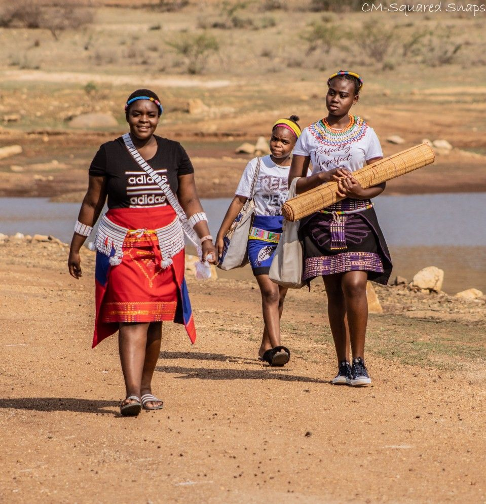
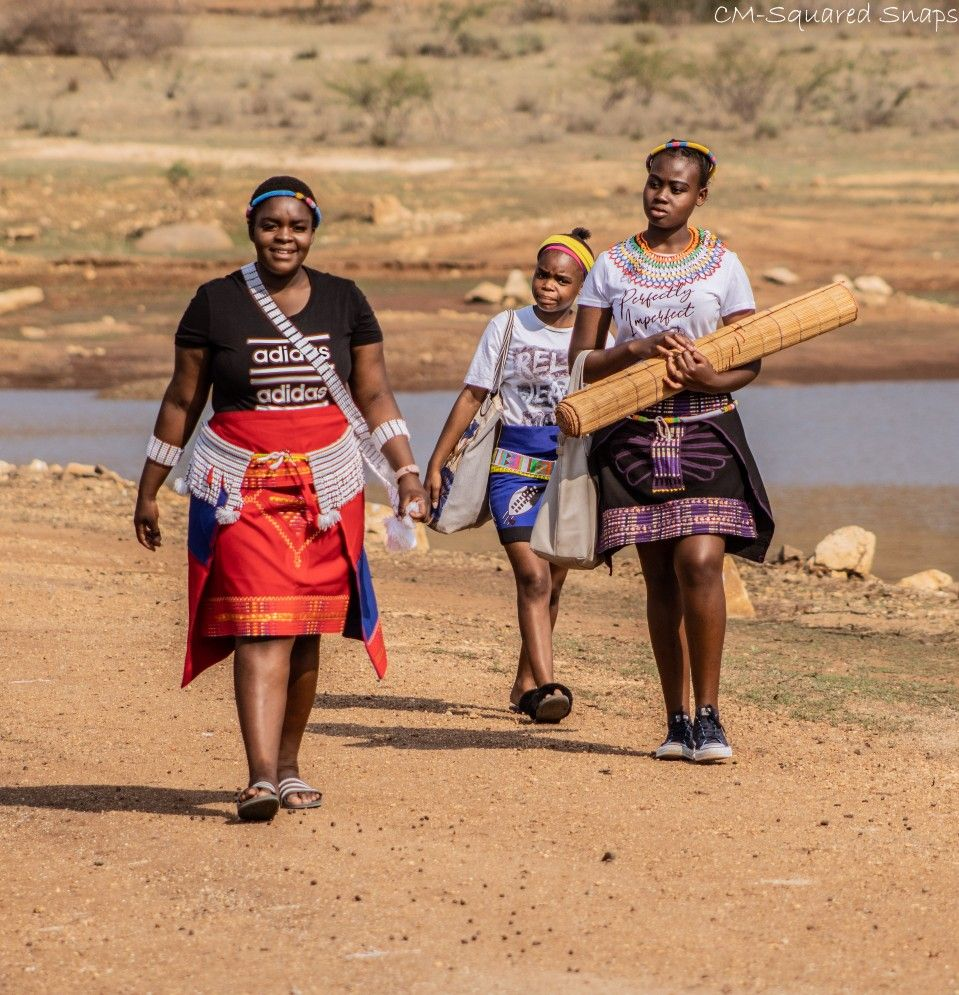
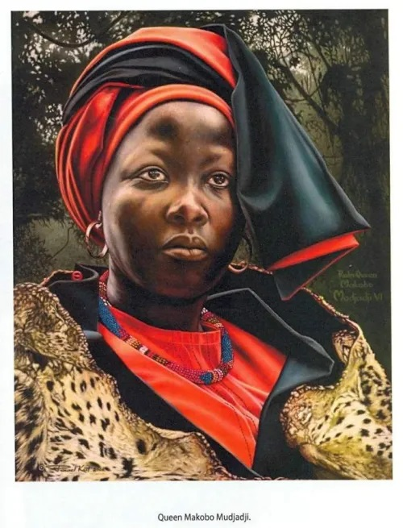

Traditional Attire
This attire is worn during special cultural ceremonies and is known for its vibrant colors.

QUEEN
"QUEEN Modjadji"
The Queen symbolizes unity and leadership in the Bolobedu community, holding significant cultural authority.


Traditional Food
Staple dishes like "Letelele" are central to Bolobedu cuisine, embodying the rich culinary history.


Traditional Dance
Bolobedu dances, such as the Domba dance, are performed during cultural festivals to celebrate heritage.

Traditional Art
Art forms like pottery and beadwork reflect the creativity and craftsmanship of the Bolobedu people.